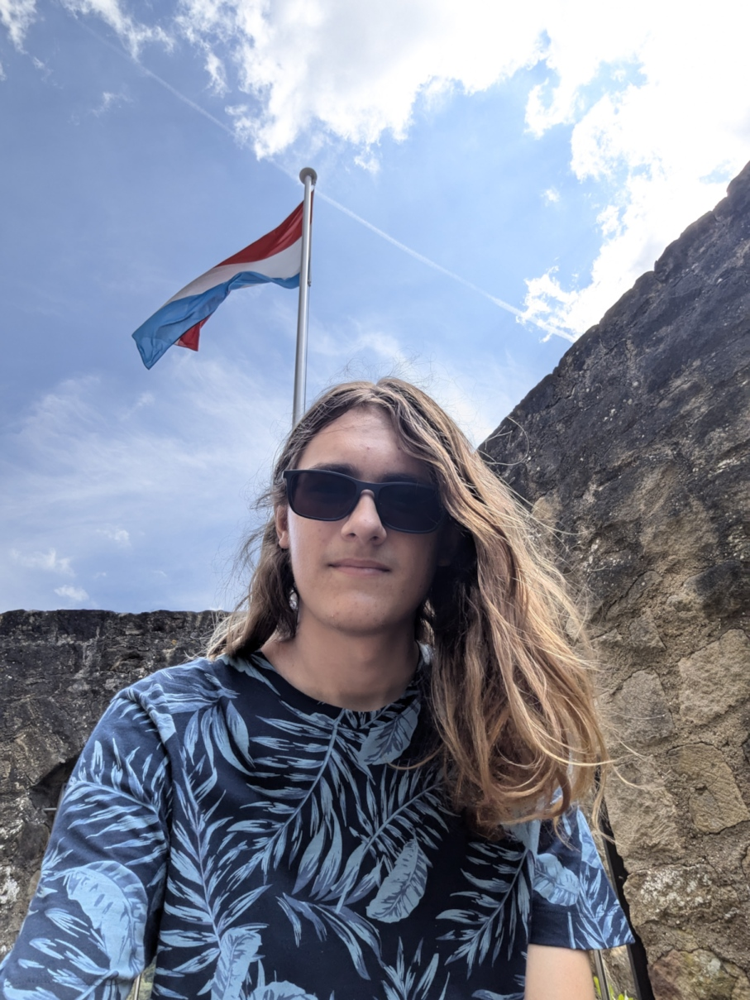

Show TL:DR
Hey, my name is Menno, I'm 18 years old and I live in Spijkenisse. I love listening to
music, coding, taking pictures, and sleeping. Currently I'm studying software development at Grafisch Lyceum,
I'm in my second year out of the three years it will take. I have taken a photography course but I haven't done
much photography since finishing that course.

Welcome, to my website. I'm 18-years-old and studying software development @ GLR (Grafisch Lyceum Rotterdam). I'm
in my second year out the the three years it will take.
At the moment I am fairly good at 3 programming languages. The language I am best at in my opinion is PHP
after which comes JavaScript and lastly Python. My Python is currently not that good
since I have not used it since I've made my "simple" project to automated part of a mobile game I used to
play. For school I am currently researching 4 different programming languages. Kotlin or Java
for a Minecraft mod or Rust or Go to make a chess engine.
Things I like to do in my spare time include, but are not limited to listening to music, gaming, sleeping, and
taking pictures. I have taken a photography course to learn more about it, and I really enjoy taking
photographs. You can find some of my photos in my gallery.
The future
After my current study I'd like to study Cyber Security. Focusing on ethical hacking, Network defense
or Social Engineering prevention. And if the tech world does not work out for me I can always try to go in on
photography since I also really like that.